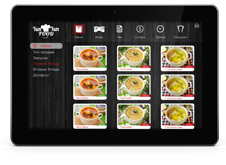

«Yum Yum Food»
- система автоматизированного обслуживания клиентов ресторанов/кафе. Позволяет улучшить систему заказа еды, увеличивая качество и скорость сервиса обслуживания, обеспечить клиенту приятное времяпровождение в ожидании заказа.
Система имеет функционал, как для клиента, так и для сотрудников ресторанов.
Интерфейс клиента:
- Заказ блюд
- Контроль
- Вызов официанта
- Заказ
- Игры
Интерфейс ресторана:
- Удобная обработка заказов
- Удобное ведение финансов
Плюсы использования нашей системы:
- Осуществления быстрой ревизии
- Снижение затрат на персонал
- Контроль работы персонала
- Приятное время проведения посетителя
